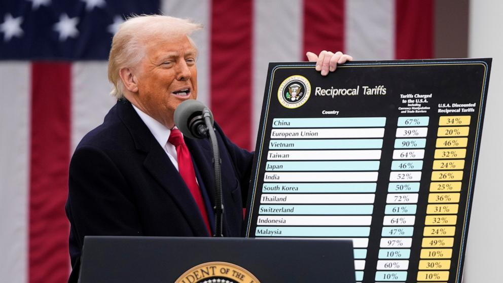

This is a cumulation of all US Trade Data behind the on-going trade war and negotiations

US Employment data July 2025 (4.2%) (BLS)
Unemployment data is essential to track the immediate effects of some of these negotiations. As some supply chains and associated industries become unsustainable following the tariffs, the overall rise in unemployment is expected in the short-term while in the long term ‘America First’ let new industries might bring down these rates to acceptable levels. There might also be deals as seen in case of Japan and the UK where manufacturing led FDIs might strengthen industrial employment is the near future.
US Inflation rate June 2025 (2.7%) (BLS)
As tariffs take effect, more and more goods that US imports might become costly if not directly for some products then indirectly resulting from the cost rise in associated industries. This factor makes this a key metric to understand the success/ failure of Trump’s tariff strategy.
US Import Partners
These are the countries that US imports from the most. Most significant tariffs announced on Liberation Day impacts America’s trade with these states the most. This is thus an important metric to follow to see if the negotiations and agreements following the tariffs lead to decline in imports from some these partner countries.
US Export Partners
These are the countries US exports to. The tariffs had the potential bring a drastic change to these metrics as well and countries would be motivated to retaliate, hurting US exports in the process. Owing to new deals and agreements, US exports to states like the UK might also see and increase, making this an important metric to understand the success and failure of these negotiations.
Understand the data and laws in detail